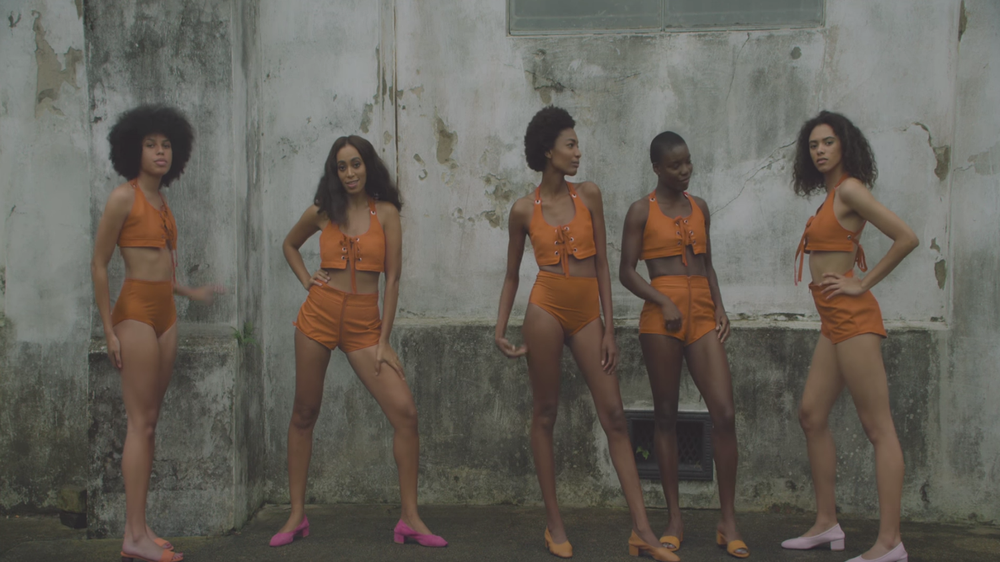
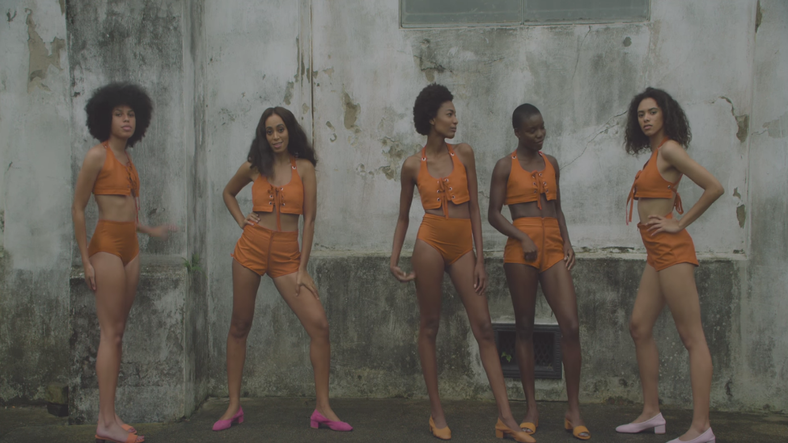

From the moment you are born, you enter a system already defined and put in place by those who came before you. Since the beginning, you are taught the rules and ways of being in order to strive within this system. When I entered this world, born in a “former” colony of France, from a father born and raised in Germany, western society as a system and its ideologies has always been part of my construction.
In this thesis, western society takes on the form of a house: a house with the promise of hybridity and equality that in my opinion has yet to be reached. In this house, white remains ascendant while the others –the non-white– struggle to establish their place. Through this arises the importance to talk about “White” as a race or non-race, as a colour or the lack thereof, as invisible but at the same time representative of all. How can we achieve true hybridity without white supremacy?
This thesis is a deconstruction of the house as an act of marking: making the invisible visible. It’s an exploration of the many nuances of white that define the foundation of the house. I start by identifying the processes that have transformed the house into a place of comfort for white by looking at its violent expansion and how it became naturalised. I will then proceed to identify the methods used to reinforce the status quo including the use of mass media, an array of defence mechanisms that render discussion about race difficult and superfluous and technologies that erase non-white bodies from our imagined future.
Parallel to this deconstruction of white, this thesis explores the act of disobedience: The disruption of whiteness and the system put in place through the lens of artists that have aimed to do just that. This part is about reclaiming the space and transforming it into a place where multiple identities and non-white bodies can flourish. By confronting the status quo with works that refuse to be part of it, this thesis takes you on a journey of learning and unlearning. The aim is to identify the status quo in order to move away from it and facilitate the designing of a future of true hybridity without white supremacy.
Introduction
In the nothing of white, we see a lot.2
As the door closes behind me, I find myself standing in this vast sea of nothingness.3 It looks so polished, almost slippery. At first, I don’t dare to move, I try to make sure that my shoes are clean enough to leave no traces behind. When I finally feel confident enough I immerse myself into the space, once step after the other, like a careful calculation. The more I venture myself into the space, the smaller I become. I’m unsure if the room is gaining in volume or if I’m reaching into myself. As I walk the emptiness dictates my movements, yet with every step I make I become less and less comfortable. My presence feels out of place and my body alienating. Even so, there is no turning back now, I’m set on my way.
On my destination towards the uncertainty, I sense that I am not alone. I can feel that I’m being watched as if a ghost is following me around to make sure I stay on the right path: the path towards the light. I try to blend in, to follow the invisible rules omnipresent in the air. With time my body orients itself to the rhythm of the nothingness. My walk, my speech, my thoughts they mutate, slowly morphing into something new and yet so familiar. It almost feels natural. I venture myself deeper and deeper into the void until the brightness overwhelms me. I’m hoping that now I won’t be so visible anymore. However as the light bounces from side to side, my body acts as an obstacle that impales it on its perfect path and the ghost, it won’t stop following me. I’ve reached now what seems to be a wall. At first, I assumed that I’ve arrived at the end but maybe it’s just the beginning, I can’t tell anymore. Fortunately, my eyes have started to adapt over time and I’m able to recognise patterns in the vacuum, able to navigate better. This void is not empty, I can see others. We are all in here, we’ve always been here. Some wandering aimlessly, some perfectly blending into the environment and some others trying to escape this big white cube, with its big white walls and its big white sky.
The white I’m talking about here is not the white that was.4 It’s the white of the here and now, the point from which the world unfolds, which is also the point of inheritance.5 A room painted white, is rarely described as such because white is not seen as a colour and therefore not described as one. In this process white becomes invisible. It’s hard to define something so present but at the same time so transparent. Technically white is the absence of colour but as a light, it’s the reflection of all, the bending of all colours: A compelling paradox of a white that needs always to be everything and nothing, literally overwhelmingly present and yet apparently absent.6 Pure white is the absence of colour in the strictest sense of the definition because you can’t mix colours to create it. However, when you examine the pigment chemistry of white, ground-up substances are used to create the many nuances of white. This white is then reproduced in all parts of our modern society and its presence has an agency. This is the white I want to talk about, the fabricated white with its many nuances to comprehend how it came to define the house we live in.
Standing here in such an approximation to the wall, I feel the urge to touch it. I want to make sense of this white that reproduces itself regardless of intention, power differences and goodwill, and overwhelmingly because it is not seen as white.8 I want to touch it, to feel and understand it. I want to disrupt it. I reach to the wall, I scratch its surface until I manage to remove parts of it, small particles of a white powder gliding through my fingers. A little mark on an imposing structure, barely something to make a difference but enough to get a warning as the ghost behind me starts screaming “If you don’t like it here, you can just leave”. I’m perplexed, I’m unaware of the possibility to exit that which infused itself in all aspects of our being. There is no escaping this whiteness, no running away or hiding from it. All there seems to be is to continue scratching –like many others have done before– until we‘ve put enough marks onto its structure that it falls, opening up to new ways of becoming. Disobeying the rules by cracking the wall and disrupting the smooth surface gives leeway for an entry point and so I scratch, and scratch, and scratch, and scratch, and scratch, and scratch, and scratch, and scratch, and scratch, and scratch, and scratch, and scratch, and scratch, and scratch...
3 - “The nothingness that Audre Lorde spoke out from, that Fanon was trapped in, that Fred Moten versifies, that Miles Davis and Dorothy Ashby riffed on–this nothingness is not absence but foundation” - Adusei-Poku, N. (2017). On Being Present Where You Wish to Disappear
Disobedience
 



Conclusion
I’ve been scratching now for months and my fingers start to hurt. I take a step back and contemplate what I have done. Gazing at the wall, it suddenly feels different, less imposing. The structure is still standing but it weakened. The marks I have left behind have created indents and dust is scattered all around the scene.
As I look at this white, a white we inherited from
Many artists and thinkers trying to navigate this white cube have constructed ways to disrupt the smooth surface of this whiteness. This act of disobedience towards the body-at-home helps to reinstate and redefine the non-white bodies in spaces. Every attempt produces marks on the structure which weakens it. These artists seek to create places where multiple identities can flourish by imposing their bodies in space, reversing the white gaze and being unapologetic for their skin colour and ethnicities. Their actions mark the way for a future of true hybridity.
I’ve questioned if by writing about whiteness I was not engaging in the same narrative that focuses on whiteness at the expanse of marginalised groups. I’m aware that by focusing on whiteness, I’m putting it again in the centre of it all. However, in order to dismantle or challenge the categories that are made invisible through privilege, we are bound to participate in its critique.65 To be able to talk about what we can do to whiteness and how we can find ways to reshape a system that only favours them, it’s important to understand what whiteness does to us. Only when white is being seen and named can it be disrupted.
This is not the end, nor is it the beginning. The indents and traces left behind have shown me that I’m capable of making changes, even if those appear small against this structure. My scratches merge with the existing marks left behind by those who were here before and those who are still to come. The patterns created by those scratches signify hope for change. My body is slowly unlearning the omnipresent rules, as I explore new ways of navigating in the space. My work is ongoing, the journey has no end. The more I scratch the freer I become and so I scratch, and scratch, and scratch, and scratch, and scratch, and scratch, and scratch, and scratch, and scratch, and scratch, and scratch, and scratch, and scratch, and scratch, and scratch...
Bibliography
9, 13, 24, 34, 44 Adler Wohndesign GmbH. (2018). Farrow & Ball Farben. Retrieved October 13, 2020, from https://www.adler-wohndesign.de/farrowandball/farrow-and-ball-farben/all-white/
3, 11 Adusei-Poku, N. (2017). On Being Present Where You Wish to Disappear, from https://www.e-flux.com/journal/80/101727/on-being-present-where-you-wish-to-disappear
5, 10, 12, 14, 15, 17, 22, 65 Ahmed, S. (2007). A phenomenology of whiteness. Feminist Theory, 8(2), 149-168. doi:10.1177/1464700107078139
53, 54 Benjamin, R. (2019). Race after technology: Abolitionist tools for the New Jim Code. Cambridge: UK.
48, 49, 50 Cave, S., Dihal, K. (2020). The Whiteness of AI. Philos. Technol. https://doi.org/10.1007/s13347-020-00415-6
35 Chatterton, T., & Newmarch, G. (2017). The future is already here – it’s just not very evenly distributed. Interactions. Retrieved October 20, 2020, from https://interactions.acm.org/archive/view/march-april-2017/the-future-is-already-here
25 Coleman, S. (2015). What Is Mass Media? - Definition, Types, Influence & Examples. from study.com/academy/lesson/what-is-mass-media-definition-types-influence-examples.html
58 Collymore, N. (2017). The Colour Black. Contemporary And, contemporaryand.com/magazines/the-colour-black/.
56 D’Aliesio, Susanna, et al. (2018). Zanele Muholi’s Somnyama Ngonyama - Hail the Dark Lioness. 1854 Photography, www.1854.photography/2018/04/show-zanele-muholis-somnyama-ngonyama-hail-the-dark-lioness/
35, 36 DiAngelo, R. (2019). White Fragility: Why It’s so Hard for White People to Talk about Racism. London: Allen Lane, an imprint of Penguin Books.
6, 8, 23 Dyer, R. (1996). White: Essays on Race and Culture. London: Routledge
64 Feeney, M. (2004). “The Winning Malice of Dave Chappelle.” Slate Magazine, Slate, slate.com/culture/2004/03/the-winning-malice-of-dave-chappelle.html.
42 Frawley, R. (2019). “Book Review: White Innocence: Paradoxes of Colonialism and Race by Gloria Wekker.” Feminist Review, vol. 121, no. 1, pp. 90–91, doi:10.1177/0141778918813330.
60 Gonzales, D. (2020). Erased Lynchings. from kengonzalesday.com/projects/erased-lynchings/.
26 Hall, S. (1997). Representation and the Media. Lecture.
51 Hern, A. (2018). Google’s solution to accidental algorithmic racism: Ban gorillas. Retrieved November 02, 2020, from https://www.theguardian.com/technology/2018/jan/12/google-racism-ban-gorilla-black-people
29, 31, 37, 40, 41 Hooks, B. (1992). Black looks: race and representation. Boston Ma: South End Press
28 Jeunesse, M. L. (2018). 10 Movies That Have Been Accused of Whitewashing. Insider, Retrieved October 18, 2020, from www.insider.com
32 “Kendrick Lamar Stops White Fan Using N-Word on Stage at Concert.” BBC News, BBC, 2018, Retrieved October 13, 2020, from www.bbc.com/news/newsbeat-44209141.
61 Little, C. (2019). ‘The White Album,’ Arthur Jafa Invents a New Film Language to Take on the Cliché of Empathy. Artnet News, news.artnet.com/exhibitions/arthur-jafa-white-album-1448167.
63 Ma, C. (2014). “What are you laughing at? A social Semiotic Analysis of Ironic Racial Stereotypes in Chappelle’s Show”, MSc in Media and Communication (Research), London School of Economics and Political Science.
52 McIlwain, C. (2020). Of course technology perpetuates racism. It was designed that way. Retrieved October 18, 2020, from https://www.technologyreview.com/2020/06/03/1002589/technology-perpetuates-racism-by-design-simulmatics-charlton-mcilwain/
46 Mohamed, S., Png, M., & Isaac, W. (2020). Decolonial AI: Decolonial Theory as Sociotechnical Foresight in Artificial Intelligence. Philosophy & Technology. doi:10.1007/s13347-020-00405-8
7 Morton J.L. (n.d). Are Black & White Colors? Retrieved October 13, 2020, from https://www.colormatters.com/color-and-design/are-black-and-white-colors
47 Oakley, S. (2019). White by Default: An Examination of Race Portrayed by Character Creation Systems in Video Games. University of Cincinnati, ProQuest Dissertations. 27765755.
59 Pejcha, C. S. (2020). Miles Greenberg Is Creating Spaces to Transcend. Document Journal, www.documentjournal.com/2020/11/miles-greenberg-is-creating-spaces-to-transcend/
30 Pitchford, M. (February 21). Beware of the White Gaze. Retrieved October 18, 2020, from http://fourteeneastmag.com/index.php/2020/02/21/11505/
2 Pracejus, John W., et al. (2006). “How Nothing Became Something: White Space, Rhetoric, History, and Meaning.” Journal of Consumer Research, vol. 33, no. 1, pp. 82–90. JSTOR, www.jstor.org/
16, 33 Staszak, J. (2020). Other/Otherness. International Encyclopedia of Human Geography, 25-31. doi:10.1016/b978-0-08-102295-5.10204-5
57 Sooke, A. (2014). Kerry James Marshall: Challenging Racism in Art History. BBC Culture, BBC, www.bbc.com/culture/article/20141023-i-show-black-is-beautiful.
18, 55 Te Velder, R. (2017). Patricia Kaersenhout: Revealing Black Spots in the Radiant White Cube. Kunstlich, Breaking the Frame, Subversion from Within.
21, 38, 39, 43 Wekker, G. (2016). White Innocence: Paradoxes of Colonialism and Race. Durhan: Duke University Press.
62 Whaley, N. (2016) “Solange’s ‘Don’t Touch My Hair’ Is An Anthem Reclaiming Black Autonomy”, HuffPost, www.huffpost.com/entry/solanges-dont-touch-my-hair-is-an-anthem-reclaiming_b_57f67383e4b030884674abca?guccounter=1.
19 Yancy, G. (2012). Look, a White!: Philosophical essays on Whiteness. Philadelphia: Temple University Press.
Colophon
Written and designed by
Anke Sondi
www.ankesondi.com
Typeset in
Halyard Text
Akzidenz Grotesk bq
Sang Bleu Versailles
Source Serif Pro
Thesis Supervision
Fusun Turetken
Design Supervision
Thomas Buxo
Silvio Lorusso
Special thanks to
Maria Jacquin
Copyright
Anke Sondi
Royal Academy of Art
The Hague
2020 -2021